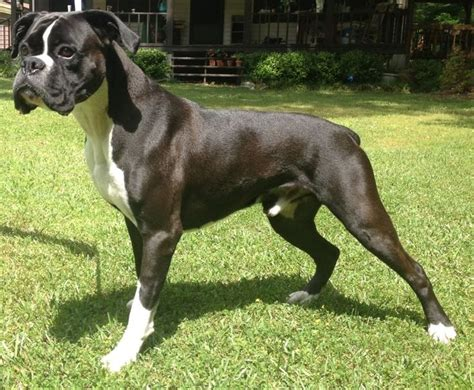
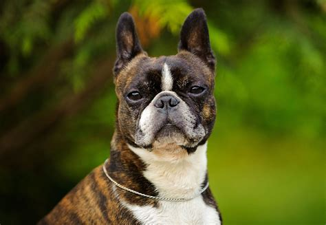

The Boxer is one of the best dog breeds there is, they are loyal and protective. We have had boxers for going on 9 years and would not trade them fo anything, they are great around the kids, phenominal listeners, and are protective of the entire household. I would recomend the boxer to anyone looking for a grteat dog that is both effectionate and protective.
Boston terriers are another fantastic dog breed. They tend to be a little more spastic than the Boxer, but have an equal amount of personallity. These guys will be very sweet as well as run zoomy laps all around you and your house.
